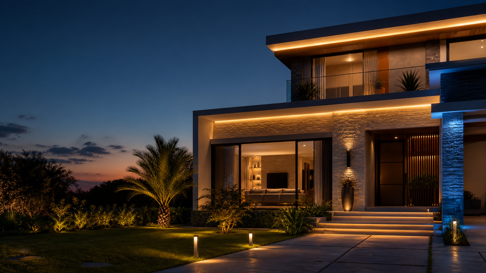

Mais tranquilidade quando você está fora
Acender luzes em horários programados, simular presença, acompanhar acessos e receber avisos quando algo importante acontecer.
Você sabia?
Ela pode ajudar sua família a viver com mais segurança, economia, conforto e autonomia — de um jeito pensado para a sua rotina.

Possibilidades reais
Você não precisa conhecer nomes técnicos ou marcas. Basta contar o que gostaria de viver no dia a dia; a NeoHome ajuda a transformar essa intenção em possibilidades.
Acender luzes em horários programados, simular presença, acompanhar acessos e receber avisos quando algo importante acontecer.
Desligar luzes e equipamentos esquecidos, criar horários e usar sensores para que a casa funcione somente quando necessário.
Uma cena para chegar, outra para assistir televisão, receber amigos, dormir ou começar o dia com mais suavidade.
Controlar iluminação, cortinas, climatização e outros recursos por voz, aplicativo, sensores ou comandos mais simples.
Comece pela sua rotina
Não precisa saber quais equipamentos comprar. A NeoHome pode ajudar você a visualizar as possibilidades.
Conversar com a NeoHome